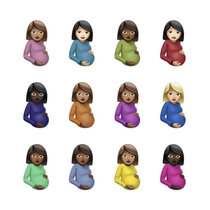
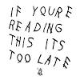

| Albums | Album Info |
|---|---|
 So Far Gone(2009) |
So Far Gone is the third mixtape by Canadian rapper Drake. It was released on February 13, 2009, under his October's Very Own label. The mixtape proved to be a major catalyst in the launching of Drake's career on an international scale, and was universally well received by professional critics and hip-hop fans alike. |
 Honestly,Nevermind(2022) |
Honestly, Nevermind is the seventh studio album by Canadian rapper and singer Drake, which was surprise-released on June 17, 2022, through OVO Sound and Republic Records. The album includes a sole guest feature from 21 Savage, and production from a variety of producers, including Gordo, Black Coffee, and 40. |
|  certified Lover Boy(2021) |
Certified Lover Boy is the sixth studio album by Canadian rapper and singer Drake, released on September 3, 2021, by OVO Sound and Republic Records. Its production was handled by frequent collaborators 40, Nineteen85, PartyNextDoor, OZ, and Vinylz, among others. Lil Baby, Lil Durk, Giveon, Jay-Z, Travis Scott, Future, Young Thug, Yebba, 21 Savage, Project Pat, Tems, Ty Dolla Sign, Lil Wayne, Rick Ross, and Kid Cudi appear as guest artists. |
 Scorpion(2018) |
Scorpion is the fifth studio album by Canadian rapper and singer Drake. It was released on June 29, 2018, by Cash Money Records, Republic Records, and Young Money Entertainment. Scorpion is a double album consisting of 25 tracks. Its first disc is primarily hip hop, while its second disc has been described as R&B and pop. It was executively produced by Drake himself, alongside frequent collaborator 40 and manager Oliver El-Khatib. Scorpion features guest appearances from Jay-Z and Ty Dolla Sign, as well as posthumous appearances from Michael Jackson and Static Major. |
 Views(2016) |
Views is the fourth studio album by Canadian rapper and singer Drake. It was released on April 29, 2016, by Cash Money Records, Republic Records, and Young Money Entertainment. Recording sessions took place from 2015 to 2016, with both Drake and his longtime collaborator and record producer 40 serving as the record's executive producers. 40 also primarily handled the production on the album alongside Nineteen85, Maneesh Bidaye, Kanye West, and Jordan Ullman, among others. Featured guest appearances include PartyNextDoor, Pimp C, Dvsn, Wizkid, Kyla, Future, and Rihanna. |
 Take Care(2011) |
Take Care is the second studio album by Canadian rapper Drake. It was released on November 15, 2011, by Young Money Entertainment, Cash Money Records and Republic Records. The album features guest appearances from the Weeknd, Rihanna, Kendrick Lamar, Birdman, Nicki Minaj, Rick Ross, Lil Wayne, and André 3000. |
Nothing Was The Same(2013) |
Nothing Was the Same is the third studio album by Canadian rapper Drake. It was released on September 24, 2013, through OVO Sound, Young Money Entertainment, Cash Money Records, and Republic Records. Work on the record began in 2012 and continued through 2013. |
 More Life(2017) |
More Life is a commercial mixtape by Canadian rapper and singer Drake. Described and marketed as a playlist, some publications have referred to it as a mixtape. It was released on March 18, 2017, through Republic Records and distributed by Cash Money Records and Young Money Entertainment. |
 Thank Me Later(2010) |
Thank Me Later is the debut studio album by Canadian rapper and singer Drake. It was released on June 15, 2010, by Young Money Entertainment, Cash Money Records, and Universal Motown Records. |
|  If You're Reading This It's Too Late(2015) |
If You're Reading This It's Too Late is a commercial mixtape by Canadian rapper Drake. It was released on February 13, 2015, without prior announcement, by OVO Sound, Young Money Entertainment, Cash Money Records and Republic Records. |
Dark Lane Demo Tapes(2020) |
Dark Lane Demo Tapes is a mixtape by Canadian rapper and singer Drake. The mixtape is a compilation of songs that were released on SoundCloud or leaked on the internet, as well as new songs, and is considered a "warm-up" to Drake's sixth studio album Certified Lover Boy. |
Come Back Season(2007) |
In 2007, Comeback Season spawned a single and a music video for "Replacement Girl", featuring Trey Songz, that was executive produced by Terral "T. Slack" of BPE. Also in 2007, Drake became the first unsigned Canadian rapper to have his music video featured on BET when his first single, "Replacement Girl", was featured as the "New Joint of the Day" on April 30, 2007. |
 The Graduate(2015) |
Graduation is the third studio album by American rapper and producer Kanye West, released on September 11, 2007, through Def Jam Recordings and Roc-A-Fella Records. Recording sessions took place between 2005 and 2007 at several studios in New York and Los Angeles. It was primarily produced by West himself, with contributions from various other producers, including DJ Toomp. The album also features guest appearances from recording artists such as Dwele, T-Pain, Lil Wayne, Mos Def, DJ Premier, and Chris Martin. The cover art and its interior artwork were designed by Japanese contemporary artist Takashi Murakami. |
The N Soundtrack(2006) |
The N Soundtrack is a soundtrack album for Noggin's teen programming block, The N. It features songs from shows that were airing at the time: Degrassi: The Next Generation, Beyond the Break, South of Nowhere, Instant Star, and Whistler. |
Scary Hours EP(2018) |
Scary Hours is the second extended play recorded by Canadian rapper Drake. It was first released on January 19, 2018 by Young Money Entertainment, Cash Money Records and Republic Records. It contains the single "God's Plan", which the also appeared on Drake's fifth studio album Scorpion. |
What A Time To Be Alive(2015) |
What a Time to Be Alive is a collaborative commercial mixtape by Canadian rapper Drake and American rapper Future. It was released on September 20, 2015, by Young Money Entertainment, Cash Money Records, Republic Records, Epic Records, A1 Records and Freebandz |
Room For Improvement(2006) |
Room for Improvement is the first official mixtape from Canadian rapper Drake. It was self-released in 2006. The mixtape was originally intended for sale only and had sold 6,000 copies in 2006. |
Lost Tracks(2015) |
If You're Reading This It's Too Late is a commercial mixtape by Canadian rapper Drake. It was released on February 13, 2015 |